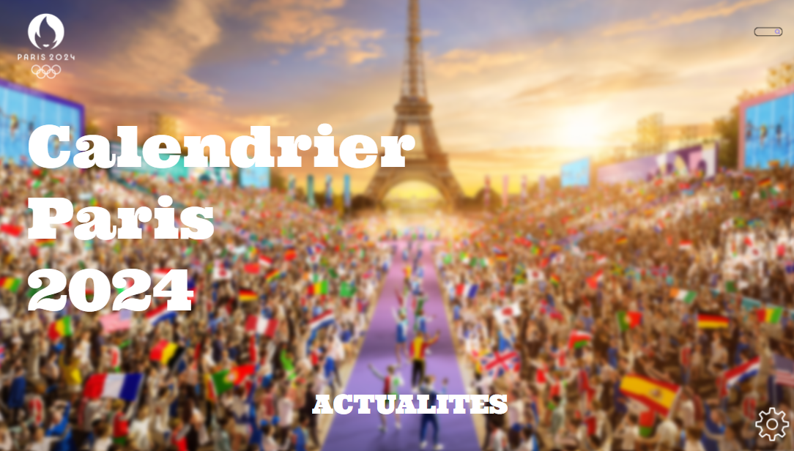
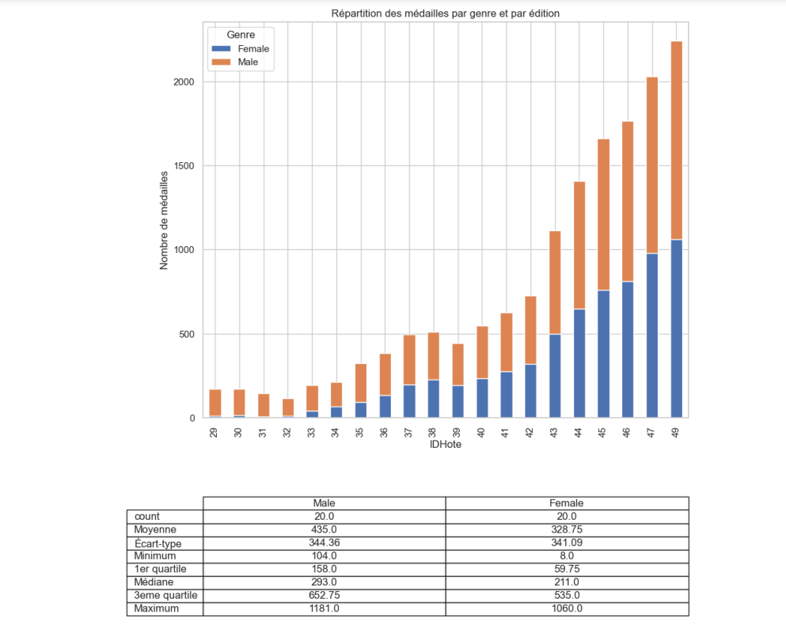
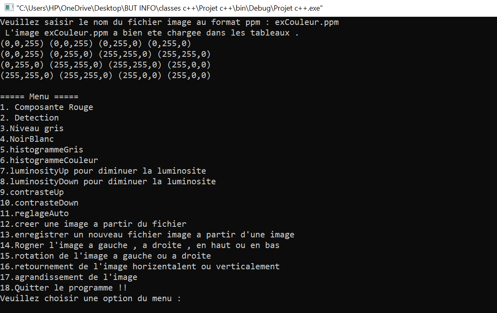
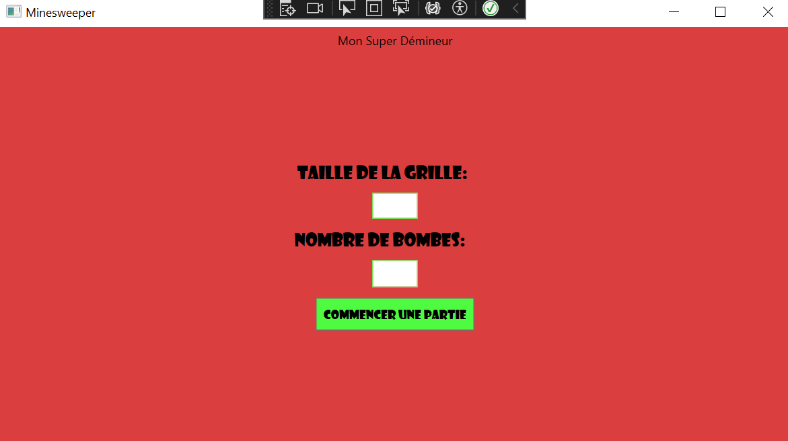
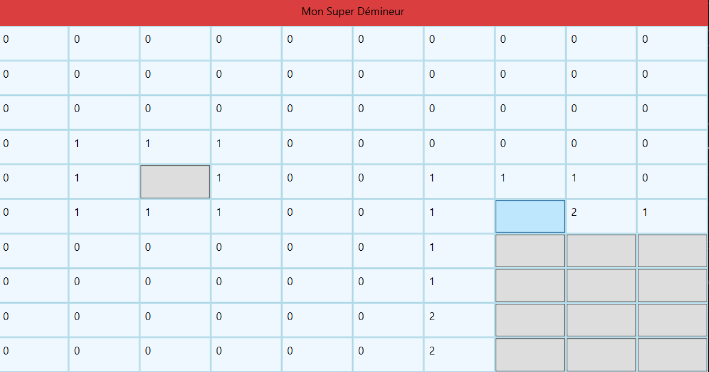
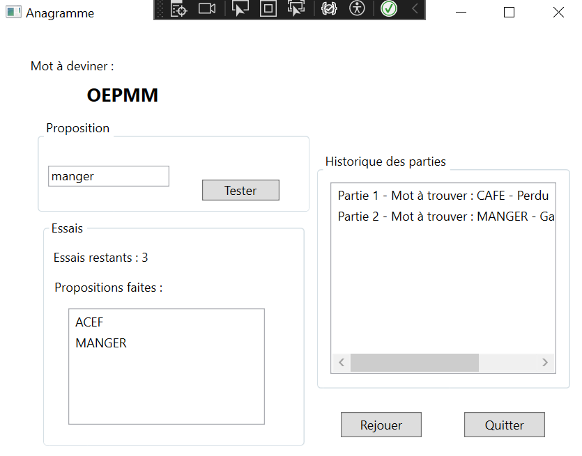
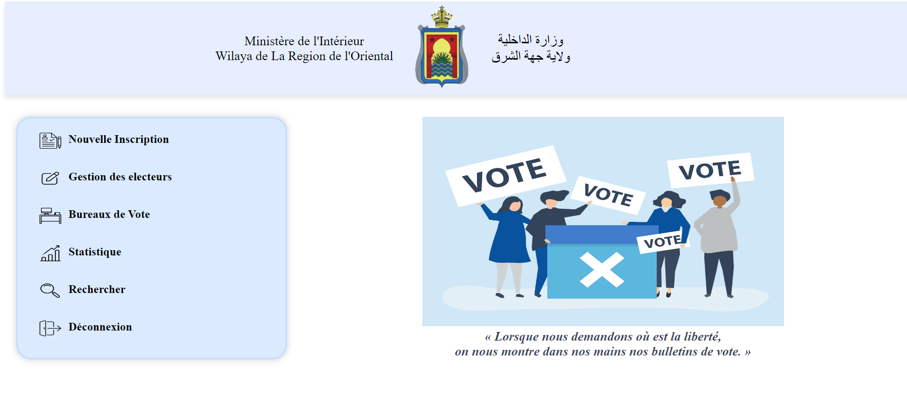

À propos de moi
Étudiante passionnée par les mathématiques et le digital, je suis actuellement engagée dans un cursus universitaire en BUT informatique. Je suis à la recherche d'un contrat d'apprentissage de deux ans en développement java et spring boot (en cours de formation) afin de concilier théorie et pratique dans le cadre de ma formation BUT 2 et 3 en alternance.
Formation
IUT de Villetaneuse (Universite Sorbonne Paris Nord) - 2025
IUT d'Orsay (Université Paris Saclay) - 2024
Ecole Superieure de Technologie Oujda, Maroc - 2023
Baccalauréat Sciences Mathematiques et Physiques - 2022
Deuxieme annee BUT Informatique
Choix du parcours A : Réalisation d'applications
Première année de BUT Informatique
Première année du DUT Informatique
Obtenu mention très bien
Mes compétences
Langages


Outils

Framework


Systèmes d'exploitation
Mes projets
Site Portfolio
Le site sur lequel vous naviguez actuellement. Réalisation d’un site web portfolio afin de mettre en pratique les différentes compétences en HTML et en CSS acquises en cours. Tous mes projets y sont présentés plus en détail.
JO Paris 2024 :
Pour ce projet, j'ai conçu des maquettes graphiques des interfaces (Home, Planning, Joueurs, Équipe, Épreuves, Sessions) en utilisant Penpot, ainsi que le modèle de données et les diagrammes de séquences en UML. J'ai développé les pages en Java en appliquant le modèle MVC, incluant l'utilisation de JPanel, JTable, et des contrôleurs d'événements. J'ai créé une base de données sur Oracle SQL Developer, élaboré des requêtes SQL, des procédures, des vues, effectué l'insertion de données, et géré les utilisateurs et leurs droits. Enfin, j'ai affiché les statistiques des Jeux olympiques à l'aide de Python (Carnet Jupyter).

Le projet est consultable ici : https://github.com/YousraWsites/JO-2024
Logiciel d'édition d'images
Programme permettant d’éditer et d’enregistrer des images au format ppm (ascii). Utilisation de classes pour stocker les valeurs de Rouge, Vert et Bleu de l’image dans des vecteurs et y effectuer des modifications. Après la saisie du nom de l’image à modifier et enregistrer par l’utilisateur, plusieurs fonctionnalités sont disponibles, comme par exemple augmenter/diminuer la luminosité de l’image, rognage et rotation, retournement horizontal/vertical, noir et blanc...

Le projet est consultable ici : https://github.com/YousraWsites/pc++
Demineur :
Programmation du jeu classique du Demineur en c#
 
Le projet est consultable ici : https://github.com/YousraWsites/demineur
Anagramme :
Réalisation d'un jeu où il faut deviner un anagramme affiché à l'écran en C# WPF. L'utilisateur peut jouer une partie d'Anagramme, où il faut retrouver le mot qui se cache derrière le mot mélangé. Il peut faire des propositions de réponses, consulter/visualiser les propositions précédentes, et il a un nombre limité de tentatives pour une partie. Si le mot est trouvé, la partie est gagnée, si le mot n'est pas trouvé à l'issu des tentatives, la partie est perdue, cela est affiché par une boîte de dialogue. L'utilisateur peut relancer une nouvelle partie à tout moment, la partie en cours est considérée perdue. A la fin d'une partie Gagnée ou Perdue, on demande à l'utilisateur s'il souhaite refaire une partie, l'historique des parties est conservé.

Le projet est consultable ici : https://github.com/YousraWsites/anagramme
Horloge :
Programmation d'une horloge pour pouvoir ajouter ou supprimer une alarme .

Le projet est consultable ici : https://github.com/YousraWsites/horloge
Site Web Gestion des electeurs :
Realisation d'une application web de gestion des electeurs sous HTML, CSS, Php, JavaScript, SQL

Le projet est consultable ici : https://github.com/YousraWsites/wilaya
Site Web Ecole Imaginaire :
Realisation d'une application web d'une ecole imaginaire .

Le projet est consultable ici : https://github.com/YousraWsites/cwac